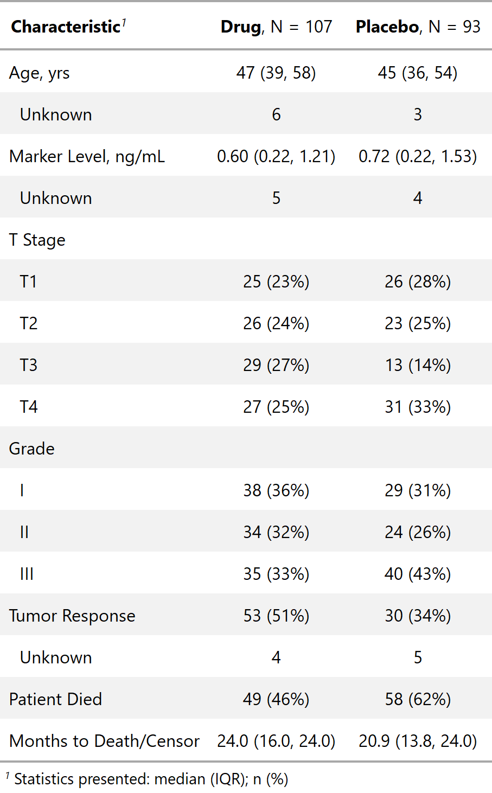

| as_gt {gtsummary} | R Documentation |
Function converts object to a gt_tbl object. This function is used in the background when the results are printed or knit. A user can use this function if they wish to add customized formatting available via the gt package. Review the tbl_summary vignette or tbl_regression vignette for detailed examples in the 'Advanced Customization' section.
as_gt(x, omit = NULL)
x |
object created by a function from the gtsummary package
(e.g. |
omit |
vector of gt commands to omit. Default is |

Daniel D. Sjoberg
tbl_summary tbl_regression tbl_uvregression
as_gt_ex <- trial %>% tbl_summary(by = "trt") %>% as_gt()